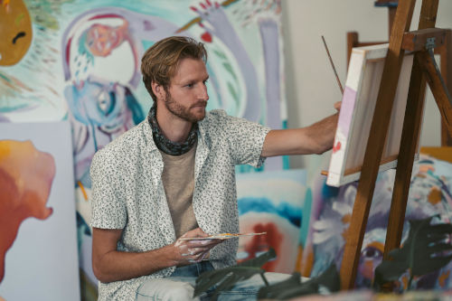

Om Mig:
Jag heter Gunnar och är konstnären bakom Gunnars Webbvernisage. Mitt skapande utgår från en fascination för färg, form och rörelse, där jag strävar efter att fånga både det synliga och det känslomässiga i mina verk. Genom mina målningar vill jag skapa en upplevelse som bjuder in betraktaren att tolka och känna, snarare än att enbart se.
Min konstnärliga resa började i ung ålder, där jag experimenterade med olika tekniker och stilar. Med tiden har jag utvecklat en unik approach som kombinerar både det abstrakta och det figurativa, där varje verk är en del av en större berättelse om mitt konstnärskap.
Min teknik varierar mellan mer traditionella metoder och ett friare, experimentellt arbetssätt. Jag arbetar ofta i lager, där färger och strukturer byggs upp successivt för att skapa djup och dynamik. Inspiration hämtas från naturen, stadsmiljöer och abstrakta intryck från vardagen.
Denna webbplats är skapad som ett digitalt galleri där mina verk kan presenteras på ett tillgängligt och modernt sätt. Här kan du utforska olika samlingar, ta del av aktuella utställningar och få en inblick i mitt konstnärliga arbete.
Om du har frågor, är intresserad av att köpa ett verk eller vill diskutera en specialbeställning, tveka inte att kontakta mig via kontaktfliken. Jag ser fram emot att höra från dig och dela min konstnärliga resa!